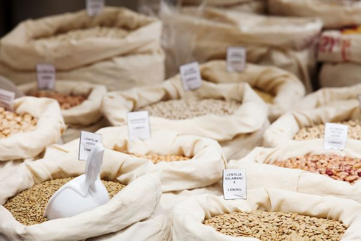
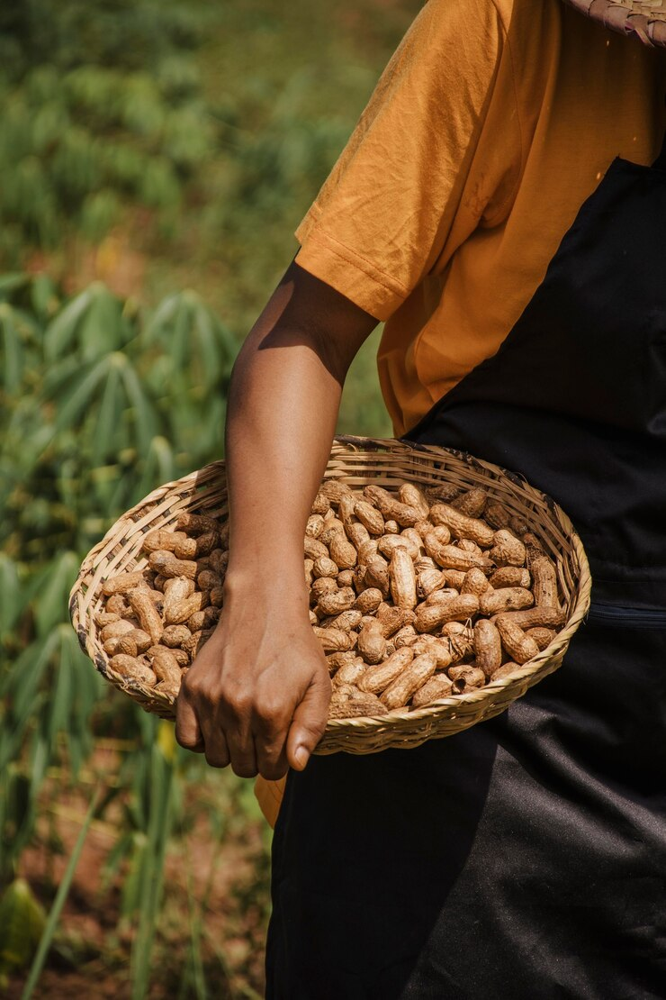
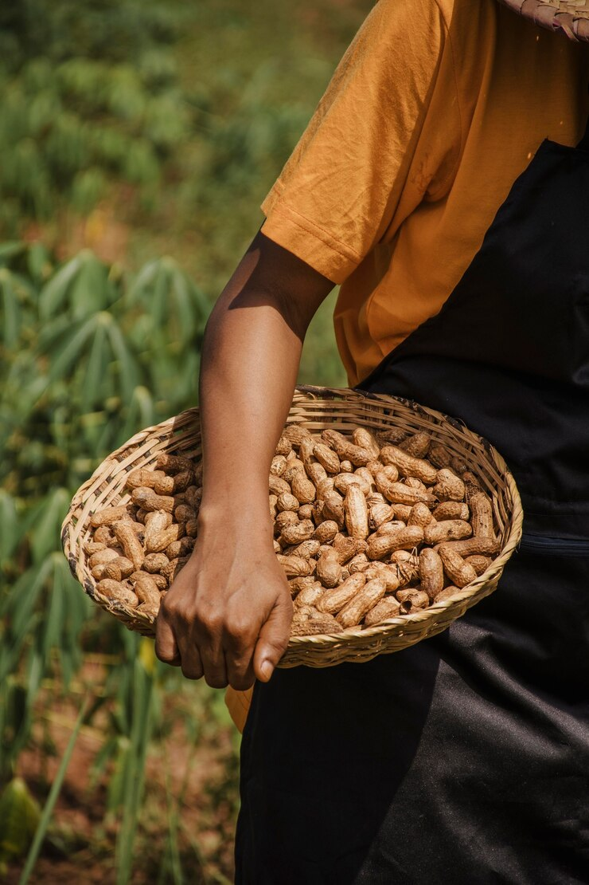

Recent Articles

Preserving Our Harvest:
Learn about innovative and eco-friendly methods for
storing grains. Discover how proper storage protects our food supply,
reduces waste, and contributes to a sustainable food system.

The Future of Grain Banking:
Explore the latest advancements in grain banking technology.
Discover how digital solutions are reshaping the industry and
enhancing efficiency and accessibility for farmers and consumers.

Innovations in Grain Processing:
Dive into cutting-edge technologies transforming grain processing.
Learn about new techniques that enhance quality, efficiency, and
sustainability in our food production systems.
 
